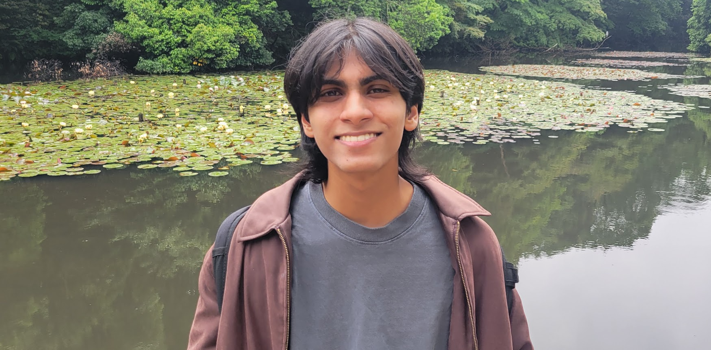

Kunal
Gupta
About Me
I'm an engineer who loves building both hardware and software. I’ve interned at Commure and will soon be at Boston Scientific, where I design data-driven healthcare tools and prototype new devices. My days are spent writing clean, maintainable code, routing PCBs, and traning robots and ML models, and processing biosignals. When I’m off the clock, I’m either diving into the latest AI papers, hiking whatever trail I can find, or getting lost in the world of The Wheel of Time.
Selected Projects
Dynamical Systems Lab
Developed a haptic vest to assist visually impared people in navigating crowded environments
Boeke Lab
Designing AI models to generate synthetic DNA for testing in mouse embryonic stem cells, enabling consistent gene expression through artificial promoters.

Smart Wearables Lab
Developing deep learning models to decode biosignals for gesture prediction in prosthetic control, using multimodal transformers and mechanistic interpretability.
Evolution Simulation
Evolving creatures learn to move and sense through neural networks and genome mutations, developing crowd dynamics.

Robotic Locomotion
Developed a robotic arm to manipulate blocks in its environment, using Jacobian kinematics and PID control.